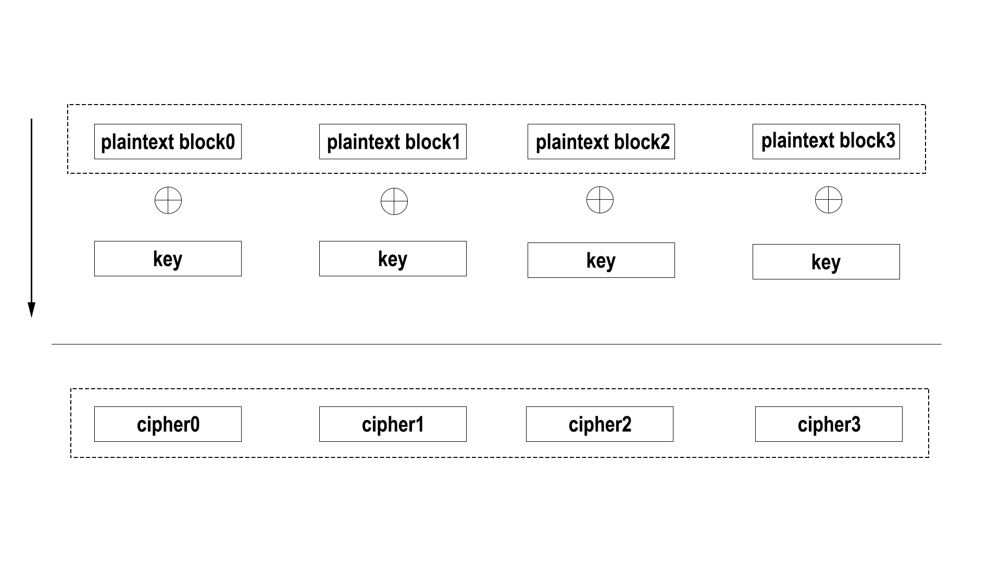

Citation
In "The Fall of a Giant", Ethel and his brother Billy add a word every two words as the encrypted ciphertext. TangBohu has a poem titled "I Love QiuXiang" in "The Collection of TangYin Poems". The method used in the above two examples is called steganography. Steganography belongs to a branch of cryptography development, it has evolved into digital watermarking technology tody. Cryptography is the technical science that studies the preparation and deciphering of codes.
What is cryptography
The first thing to note is that the passwords people often to say are not cryptography, password or pin is just used to confirm the identity of a user, but cryptography is about constructing and analyzing protocols that prevent third parties or the public from reading private messages. Another thing that is easily misunderstood as cryptography is code, code is a system of rules to convert information into another form.

code : is a system of rules to convert information into another form.
password/pin : is usually used to confirm the identity of a user.
cryptography : is about constructing and analyzing protocols that prevent third parties or the public from reading private messages.
History of Cryptography
Classical Cryptography
1. Caesar cipher
1 | plaintext : a b c d e f g h i j k l m n o p q r s t u v w x y z |
It can be seen from the above encryption rules that this encryption method is very simple. This is precisely the earliest and simplest encryption and decryption method in classical cryptography, and is called the shift cipher.
When the leeter is shifted by three digits, it is called the Caesar cipher at this time. The Caesar Cipher was created by Julius Caesar during the expansion of Rome and was used to encrypt combat commands transmitted through messengers.
Let's look at an example. 1
2plaintext : Cross the river tomorrow at 2 clock.
chiphertext : Zolpp qeb ofsbo qljloolt xq 2 zilzh.
2. Single-table Substitution cipher
The replacement rules of the Caesar cipher are orderly, which is very insecure. Its upgraded version is a single-table substitution cipher, which means that the correspondence between letters is disorderly. Such as:
1 | plaintext : a b c d e f g h i j k l m n o p q r s t u v w x y z |
In this corresponding rule, each letter may have 26 situation corresponding to it, that is to say, the complexity of the password is 26!.
3. Vigenère Cipher
1 | | a b c d e f g h i j k l m n o p q r s t u v w x y z |
The Vigenère cipher (French pronunciation: [viʒnɛːʁ]) is a method of encrypting alphabetic text by using a series of interwoven Caesar ciphers, based on the letters of a keyword. It employs a form of polyalphabetic substitution.
polyalphabetic cipher : A polyalphabetic cipher is any cipher based on substitution, using multiple substitution alphabets. The Vigenère cipher is probably the best-known example of a polyalphabetic cipher, though it is a simplified special case. The Enigma machine is more complex but is still fundamentally a polyalphabetic substitution cipher.
The Vigenère cipher is a two-demensional encryption, and the concept of a key is introduced for the first time. The great thing about the Vigenère cipher is that the replacement rules are public, you only need to hide the key to ensure the security of the information. It is worth noting that the key can be long or short. If the key length is less than the plaintext length, the key will be recycled, if the key length is greater than the plaintext length, the excess part will be discarded.
Let's look at some examples, we assume that the key is coffee. Now we use this key to encrypt different plaintext. 1
2
3
4
5
6
7
8
9No.1
plaintext : apple
key : coffe
ciphertext : cduqi
No.2
plaintext : youareagoodman
key : coffeecoffeeco
ciphertext : aczfvicutthqcb
4. Enigma(Rotor Machine)
The three encryption method described above all need to be implemented manually, which is inefficient. After that, an efficient way to use machine encryption appeared----Rotor Machine
Rotor Machine : A rotor machine is an electro-mechanical stream cipher device used for encrypting and decrypting messages. Rotor machines were the cryptographic state-of-the-art for a prominent period of history; they were in widespread use in the 1920s–1970s. The most famous example is the German Enigma machine, the output of which was deciphered by the Allies during World War II, producing intelligence code-named Ultra.

The working principle of the Enigma is not as difficult as you think. If you have some knowledge of electronic circuits, it will be very easy to understand its principle. When you press a letter, the current passes through the three rotors and it encrypted three times, and then the result is lit by the wire, and vice versa. It is worth noting that the rotation periods of the three rotors are different. The actual operation situation is that each time the key is pressed, rotor 1 rotates 1/4 turn, rotor 2 rotates 1/4 turn when rotor 1 rotates 1 turn, and rotor 3 rotates 1/4 turn when rotor 2 retates 1 turn. 
Modern Cryptography
With the development of the times, cryptography is also advancing rapidly. The emergence of some iconic events indicates that cryptography has entered the modern field.
1976 : Diffie and Hellman proposed the idea of a public key cryptography system in "New Directions in Cryptography"
1977 : The American National Bureau of Standards promulgated the data encryption standard DES(Data Encryption Standard)
1978 : The first public key algorithm RSA algorithm(consisting of the initials of Ron Rivest, Adi Shamir and Leonard Adleman)
Classical cryptography only solves the problem of confidentiality, while modern cryptography must solve not only confidentiality, but also completeness, authentication and non-repudiation. In the process of message transmission, there are mainly problems such as eavesdropp, tamper, camouflage and deny afterwards. As the Chinese idiom goes, virtue is one foot tail, the devil ten foot, the corresponding solutions are symmetric/asymmetric cipher, hash function, authentication code and digital signature.

1. Symmetric Cipher
Symmetric cipher refers to use of the same key for encryption and decryption.
In symmetric encryption, the length of the key is fixed, and using a shorter key to encrypt long messages is a common method of symmetric encryption. As can be seen from the above figure, the key to symmetric encryption lies in the management of the key. Once the key is lost, the entire cryptographic system is self-destructive, and a loophole in symmetric encryption is the first distribution of the key. The first distribution of the key can be by whispering or writing letters, but these methods are very unrealistic. It was not until the emergence of asymmetric encryption technology that the key distribution problem was truly solved.
Representative symmetric cryptographic algorithm: DES(Data Encryption Standard), AES(Advanced Encryption Standard), Blowfish, Twofish...
In practice, the encryption of the message will be done in groups, and the size of the group is usually the length of the key. The simplest block cipher is as you think. The advantage of this method is fast speed and low overhead, but the disadvantage is also obvious, that is, it is not safe enough. When the key is unchanged, the same plaintext must correspond to the same ciphertext, as long as the malicious third party collects enough the ciphertext, then the ciphertext of the sender can be replaced to achieve the purpose of modification. 
In order to solve problems, the concept of initialization vector is introduced, and the previous ciphertext block is used as the input of the next ciphertext block to encrypt the message, and the block cipher is gradually improving. Usually the initialization vector is located in the first few bytes of the ciphertext. This method is called CBC(Cihper Block Chaining) 
2. Asymmetric Cipher
Asymmetric cipher is just lisk tis name, refers that encryption and decryption use different keys. Using asymmetric encryption will generate a pair of keys, which are public key and private key. You can think of the public key as a lock and the private key as the key to the lock. All you have to do is to give the lock to other people, and other people use this specific lock to lock the plaintext. The locked plaintext can only be opened by the person who has the private key, that is, the key, enen the publisher of the plaintext cannot open it without the key.
Because the key pair is long and complex, the asymmetric encryption algorithm is slow in actual use, so it is often used to encrypt short plaintext, such as a symmetric encryption key. This also perfectly solves the core problem of key distribution in symmetric cryptography. 
Representative asymmetric cryptography algorithm: RSA, DH, DSA, ECDSA...
Mathematical principles : Factorization, Discrete logarithm, Elliptic curve
Common attack methed : Man in the middle attack
Quantum Cryptography
- Realized OTP(One Time Pad), theoretically undecipherable
- Low bit rate in reality, there are still a lot of problems
Post-quantum Cryptography
Post-quantum cryptography is a new generation of cryptographic algorithms that can resist quantum computers'attacks on existing cryptographic algorithms. There's still a long way to go.